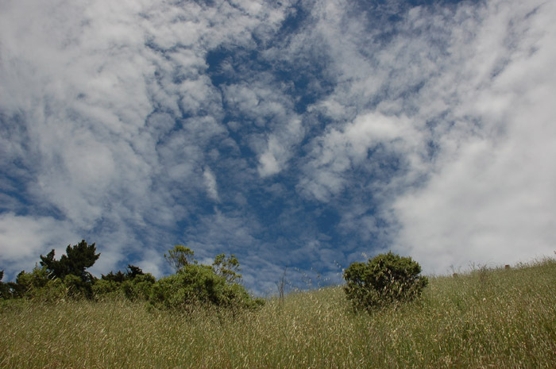
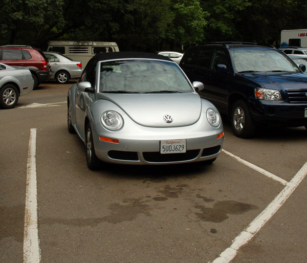
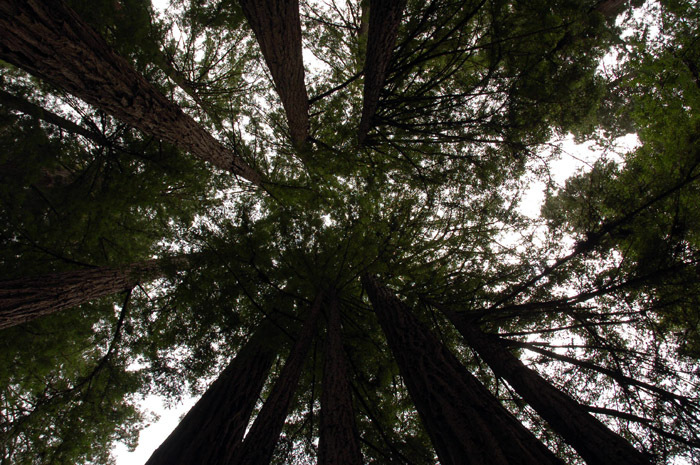
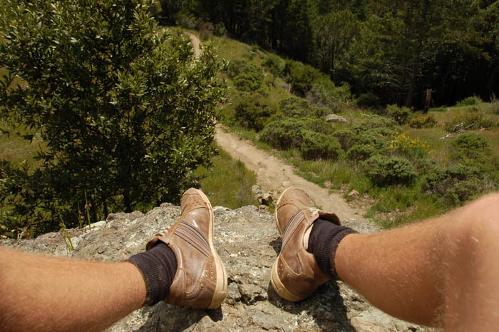
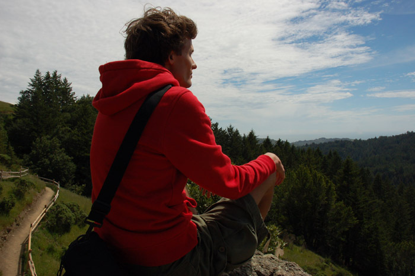
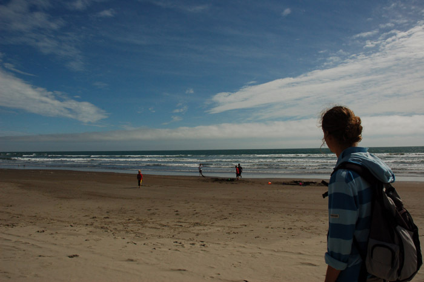
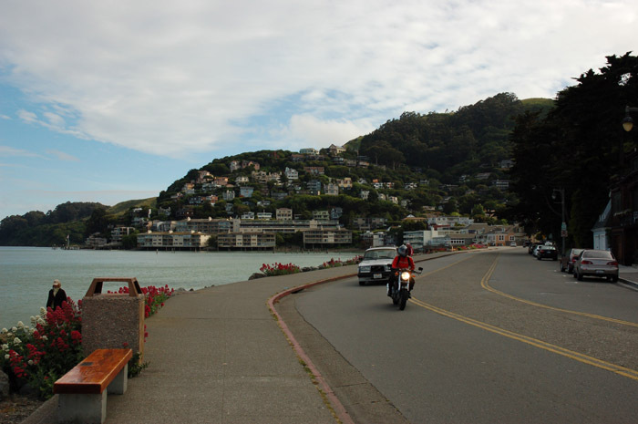
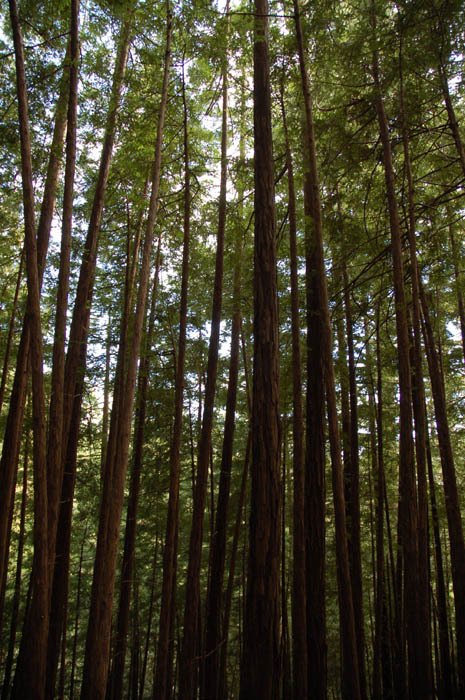
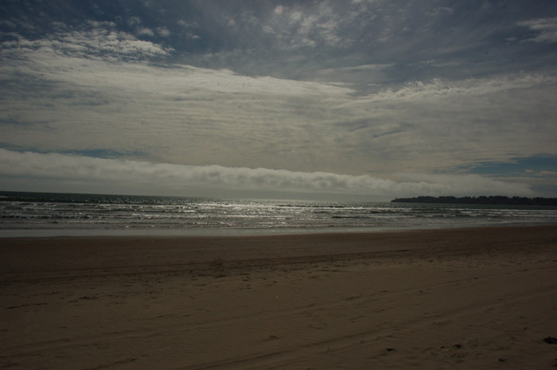
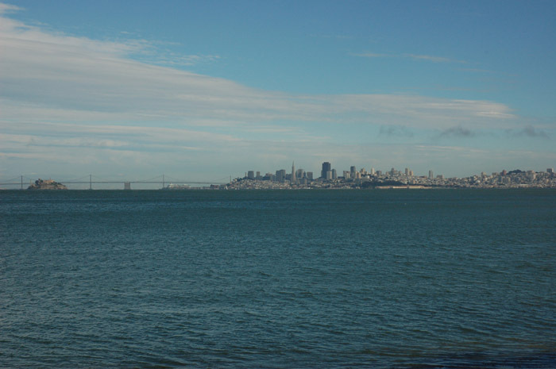

Beetle in the Nature
 
Vanochtend om 11 uur heeft Ludo zijn tijdelijke ride opgehaald: een heuse Volkswagen New Beetle Convertible met lederen interieur. Ik kan je vertellen dat dat behoorlijk fun is. Het knopje om het dak te openen zit goed verstopt en eigenlijk is het nét iets te fris om zonder dak rond te rijden. Maar daar trekken we ons niks van aan, dus doen we het dak open alsof er niks aan de hand is. Het volgende instrument dat bekeken moet worden is de versnellingspook. Het is een automaat en da is eigenlijk niks, maar die Amerikanen weten eigenlijk niet beter. Naast de normale standen heeft deze Beetle ook nog een ‘S’, waarover later meer.
Om meteen gebruik te maken van de nieuwe mogelijkheden die deze auto biedt wilde ik over de Golden Gate Bridge rijden, naar het Muir Woods natuurpark bekend om de zogenaamde Coast Redwoods. Daarnaast wilde ik een bezoekje brengen aan Sausalito, dat vooral bekend is om het prachtige uitzicht op de skyline van San Francisco. Maar alleen is ook maar zo alleen, daarom is Felix, een Duitser die ik hier een paar dagen geleden heb ontmoet, ook meegegaan. De trip begint op 750 Bush Street midden in San Francisco, waar het rijden met een auto een hele kunst is maar tegelijkertijd ook erg leuk. De afgelopen week heb ik geprobeerd om goed op te letten hoe Amerikanen zich in het verkeer gedragen.

De omvang van de Coast Redwoods is just amazing. Even more amazing is dat sommige van deze bomen al meer dan duizend jaar oud zijn. Het is jammer dat ik (nog) geen geur kan overbrengen via de computer, maar het ruikt heerlijk in dit woud. De geur van zo’n dennenboom die je in je auto hangt, maar dan echter en beter. Het is moeilijk om de omvang en vooral de hoogte van deze reuzen in een foto te vangen. We hebben zo’n drie uur verschillende paden in het bos gevolgd, waaronder de ‘Ocean View Trail’. Het uitzicht boven op een heuvel aan dit pad is adembenemend. Wij hadden het geluk dat het prachtig weer was, er waren wel wolken maar alleen hoog boven de heuvels. Zeer de moeite waard!
 
Eenmaal terug bij de auto hebben we een stuk van Highway 1 meegepikt, waarna we weer rechtsaf de Panoramic Highway ingeslagen zijn die ons over de heuvels terug brengt naar Highway 101 richting Sausalito. Het rijden van dit stuk is heerlijk, een route met veel schitterende uitzichten en veel haarspeldbochten. De ‘S’ stand van de automaat blijkt hier nóg meer fun op te leveren. S staat namelijk voor ‘Sporty’ en dat merk je best goed. Het zal vast niet goed zijn voor het benzineverbruik maar zodra je gas geeft ga je er als een speer vandoor. Dit is echt genieten!
 
Het vinden van een parkeerplaats in Sausalito is vervolgens wel weer lastig. uiteindelijk lukt het om een plekje te vinden en in ieder geval even de skyline van San Francisco te bewonderen. Het begint echter al laat te worden en Felix moet inchecken in een ander hostel dus we besluiten om terug te gaan naar San Francisco. Na weer over de Golden Gate Bridge te zijn gereden slaan we rechtsaf Fillmore Street in. Dit is een van de steilste straten in San Francisco en het is een hele ervaring om dit omhoog te rijden. In dit geval is een automaat toch wel handig, omdat het eigenlijk allemaal vanzelf gaat. Uiteindelijk heb ik de auto geparkeerd in de parkeergarage waar ik hem morgen weer op ga halen om richting het zuiden te rijden, naar Santa Cruz. De weersverwachting is niet zo goed helaas, maar ik hoop nog wel een stuk met het dak open te kunnen rijden…
  